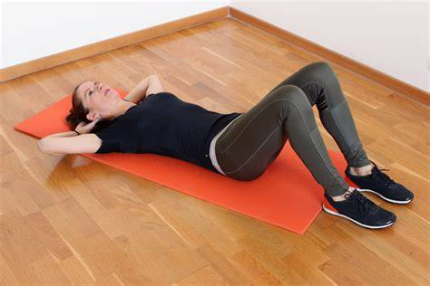

Exercicios fisicos: Corpo em Movimento, Mente em Equilíbrio

Aquecimento
Explicação:
Antes de iniciar qualquer atividade física, é essencial preparar o corpo com exercícios leves como
alongamentos, corrida estacionária ou movimentos articulares. Isso reduz o risco de lesões e melhora o
desempenho.
Exercicios
Cada pessoa tem seu exercício favorito, e o importante é manter-se ativo de forma que goste. Por
exemplo, a musculação é excelente para ganhar força, aumentar a resistência e definir a musculatura.
Exercícios como agachamento, supino, remada e desenvolvimento de ombros são eficazes e ajudam a manter
o corpo forte e saudável. Para quem prefere, exercícios aeróbicos como corrida e ciclismo também são
ótimas escolhas para melhorar o condicionamento físico e a saúde cardiovascular.
Cuidados Pessoais
Praticar exercícios com segurança é essencial para evitar lesões e garantir resultados duradouros.
Manter-se hidratado, usar roupas confortáveis, respeitar os limites do corpo e descansar adequadamente são
cuidados básicos que fazem toda a diferença. Além disso, incluir alongamentos e exercícios de mobilidade no
seu dia a dia ajuda na recuperação muscular e na manutenção da flexibilidade. Sempre que possível, consulte
um profissional para orientar seu treino e garantir que você está praticando da melhor